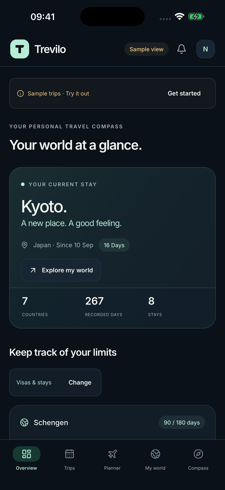

Your world, in days.
Record trips with countries, places and dates. A calendar, world map and country statistics show where you spent your time.
Your trips, your days, your next adventure. A quiet place for everything that matters on the move.
For iPhone & iPad · 8 languages · English by default · App Store release in preparation

From your first entry to your next destination: give your travel story a home.
Record trips with countries, places and dates. A calendar, world map and country statistics show where you spent your time.
Follow Schengen 90/180, personal tax thresholds and full days abroad. Future plans stay separate from actual trips.
Keep document expiry dates, reminders, checklists and receipts together. Export PDF travel reports and full JSON backups.
No account. No ads. No analytics trackers. Your travel entries are stored locally. You choose to enable location, calendar and photo imports, then review each suggestion.
How your data is processed ↗Find answers about counters, imports, backups and device settings in Help.
Open helpCounters and projections help you plan. They do not replace an official decision or individual legal and tax advice.